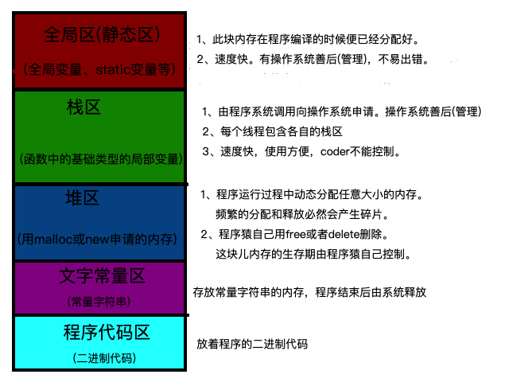

内存分配
内存分配
GO语言内存管理子系统主要由两部分组成：内存分配器和垃圾回收器（gc）。内存分配器主要解决小对象的分配管理和多线程的内存分配问题。
Golang运行时的内存分配算法主要源自 Google 为 C 语言开发的TCMalloc算法，全称Thread-Caching Malloc。核心思想就是把内存分为多级管理，从而降低锁的粒度。它将可用的堆内存采用二级分配的方式进行管理：每个线程都会自行维护一个独立的内存池，进行内存分配时优先从该内存池中分配，当内存池不足时才会向全局内存池申请，以避免不同线程对全局内存池的频繁竞争。
经典内存分配

内存分配
Go在程序启动是，会申请一片连续的内存(虚拟内存)，具体结构如下:
----------------------------------------------------------------------
| spans | bitmaps | arena |
----------------------------------------------------------------------
- arena:可理解为heap，按管理分配的角度看是多个连续的页组成的大块内存；按使用 角度出发，可理解为存储的对象
- bitmap:位图存储arena对应的存储是否有对象以及是否被gc标记，用来保存指针和gc等相关信息
- spans:管理分配arena的区域，存放mspan的指针
总结
arena中包含基本的管理单元和程序运行时候生成的对象或实体，这两部分分别被spans和bitmap这两块非heap区域的内存所对应着。
内存管理
go的内存管理组件主要有mspan、mcache、mcentral和mheap
- mspan:内存管理的基础单元，直接存储数据的地方。
- mcache:每个运行期的goroutine都会绑定的一个mcache(GMP并发模型中的P，所以可以无锁分配mspan)，mcache会分配goroutine运行中所需要的内存空间(即mspan)
- mcentral:所有mcache切分好后备的mspan
- mheap:代表Go程序持有的所有堆空间。还会管理闲置的span，需要时向操作系统申请新内存
mspan
mspan的Size Class共有67种，每种mspan分割的object大小是8的倍数，这个是写死在代码里的:
|
|
根据mspan的Size Class可以得到它划分的object大小。 比如Size Class等于3，object大小就是32B。32B大小的object可以存储对象大小范围在17B~32B的对象。而对于微小对象（<16B），分配器会将其进行合并，将几个对象分配到同一个object中。数组里最大的数是32768，也就是32KB，超过32KB就是大对象了，它会被特别对待。
类型Size Class为0表示大对象，它实际上直接由堆内存分配，而小对象都要通过mspan来分配。
对于mspan来说，它的Size Class会决定它所能分到的页数(一页8KB)，这也是写死在代码里的：
|
|
mspan结构体
|
|

假设最左边第一个mspan的Size Class等于10，根据前面的class_to_size数组，得出这个msapn分割的object大小是144B，算出可分配的对象个数是8KB/144B=56.89个，取整56个，所以会有一些内存浪费掉了(Go的源码里有所有Size Class的mspan浪费的内存的大小)；再根据class_to_allocnpages数组，得到这个mspan只由1个page组成。
startAddr直接指向arena区域的某个位置，表示这个mspan的起始地址，allocBits指向一个位图，每位代表一个块是否被分配了对象；allocCount则表示总共已分配的对象个数。
这样，左起第一个mspan的各个字段参数就如下图所示：
----------------
| mspan |
----------------
| startAddr |
----------------
| npages=1 |
----------------
| nelems=56 |
----------------
| allocBits |
----------------
| allocCount |
----------------
| spanClass=10 |
----------------
| elemSize=144B|
----------------
| next |
----------------
| prev |
----------------
mcache
mcache：每个工作线程都会绑定一个mcache，本地缓存可用的mspan资源，这样就可以直接给Goroutine分配，因为不存在多个Goroutine竞争的情况，所以不会消耗锁资源。
mcache用Span Classes作为索引管理多个用于分配的mspan，它包含所有规格的mspan。它是_NumSizeClasses的2倍，也就是67*2=134，为什么有一个两倍的关系，是为了加速之后内存回收的速度，数组里一半的mspan中分配的对象不包含指针，另一半则包含指针。
对于无指针对象的mspan在进行垃圾回收的时候无需进一步扫描它是否引用了其他活跃的对象。
mcache在初始化的时候是没有任何mspan资源的，在使用过程中会动态地从mcentral申请，之后会缓存下来。当对象小于等于32KB大小时，使用mcache的相应规格的mspan进行分配。
|
|
mcentral
mcentral:为所有mcache提供切分好的mspan资源。每个central保存一种特定大小的全局mspan列表，包括已分配出去的和未分配出去的。 每个mcentral对应一种mspan，而mspan的种类导致它分割的object大小不同。当工作线程的mcache中没有合适（也就是特定大小的）的mspan时就会从mcentral获取。
mcentral被所有的工作线程共同享有，存在多个Goroutine竞争的情况，因此会消耗锁资源。
empty表示这条链表里的mspan都被分配了object，或者是已经被cache取走了的mspan，这个mspan就被那个工作线程独占了。而nonempty则表示有空闲对象的mspan列表。
|
|
mheap
mheap：代表Go程序持有的所有堆空间，Go程序使用一个mheap的全局对象_mheap来管理堆内存。
当mcentral没有空闲的mspan时，会向mheap申请。而mheap没有资源时，会向操作系统申请新内存。mheap主要用于大对象的内存分配，以及管理未切割的mspan，用于给mcentral切割成小对象。
从mcentral数据结构可见，每个mcentral对象只管理特定的class规格的span。事实上每种class都会对应一个mcentral,这个mcentral的集合存放于mheap数据结构中。mheap中含有所有规格的mcentral，所以，当一个mcache从mcentral申请mspan时，只需要在独立的mcentral中使用锁，并不会影响申请其他规格的mspan。
|
|
分配流程
对象分类
- 微小对象
size < 16B - 一般小对象
16 bytes < size <= 32k - 大对象
size > 32k
分配方式
- tinny allocations (
size < 16 bytes,no pointers) 微型分配器分配 - small allocations (
size <= 32k) 正常分配；首先通过计算使用的大小规格，然后使用 mcache 中对应大小规格的块分配 - large allocations (
size > 32k) 大对象分配；直接通过mheap分配。这些大对象的申请是以一个全局锁为代价的，因此任何给定的时间点只能同时供一个 P 申请。
分配顺序
- 首先通过计算使用的大小规格。
- 然后使用mcache中对应大小规格的块分配。
- 如果mcentral中没有可用的块，则向mheap申请，并根据算法找到最合适的mspan。
- 如果申请到的mspan 超出申请大小，将会根据需求进行切分，以返回用户所需的页数。剩余的页构成一个新的 mspan 放回 mheap 的空闲列表。
- 如果 mheap 中没有可用 span，则向操作系统申请一系列新的页（最小 1MB）。
参考
- 原文作者：weiweng
- 原文链接：https://weiweng.github.io/blog/post/2020-03-15-%E5%86%85%E5%AD%98%E5%88%86%E9%85%8D/
- 版权声明：本作品采用知识共享署名-非商业性使用-禁止演绎 4.0 国际许可协议. 进行许可，非商业转载请注明出处（作者，原文链接），商业转载请联系作者获得授权。